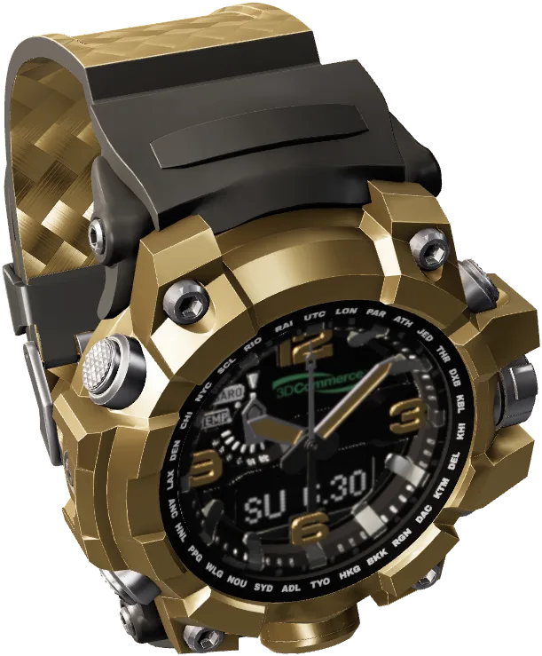
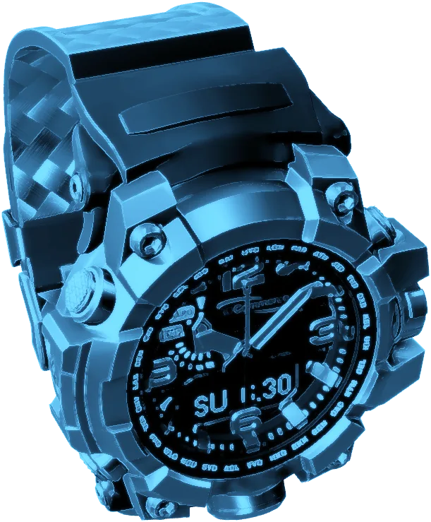
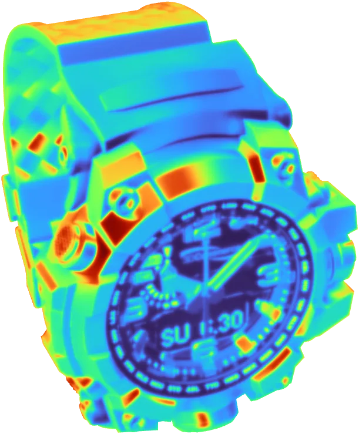

0piezas · cada una ajustada a 0,01 mm
00:0020 °CCrudo
Visión de rayos X. Sin abrirlo.
Pasa el cursor por encima del reloj (en el móvil, arrástralo con el dedo).



0piezas · cada una ajustada a 0,01 mm
00:0020 °CCrudo
Pasa el cursor por encima del reloj (en el móvil, arrástralo con el dedo).

